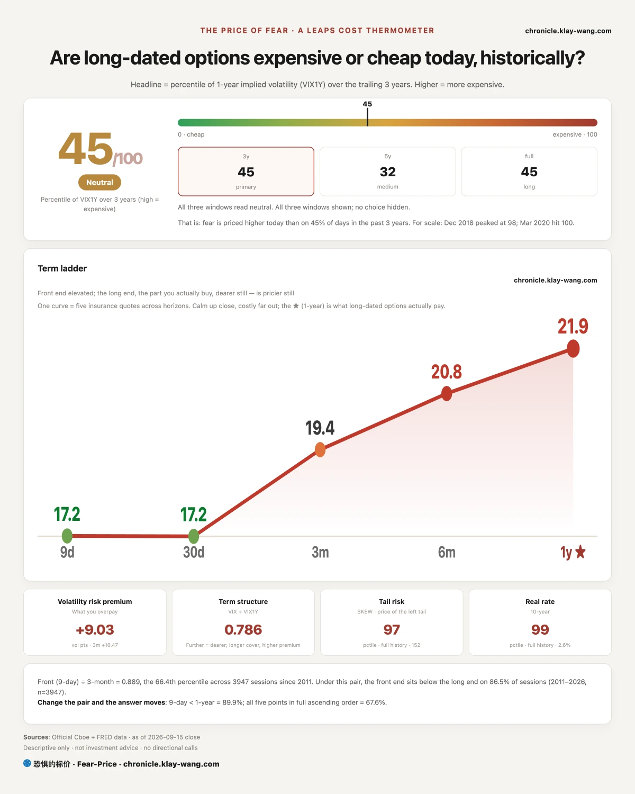
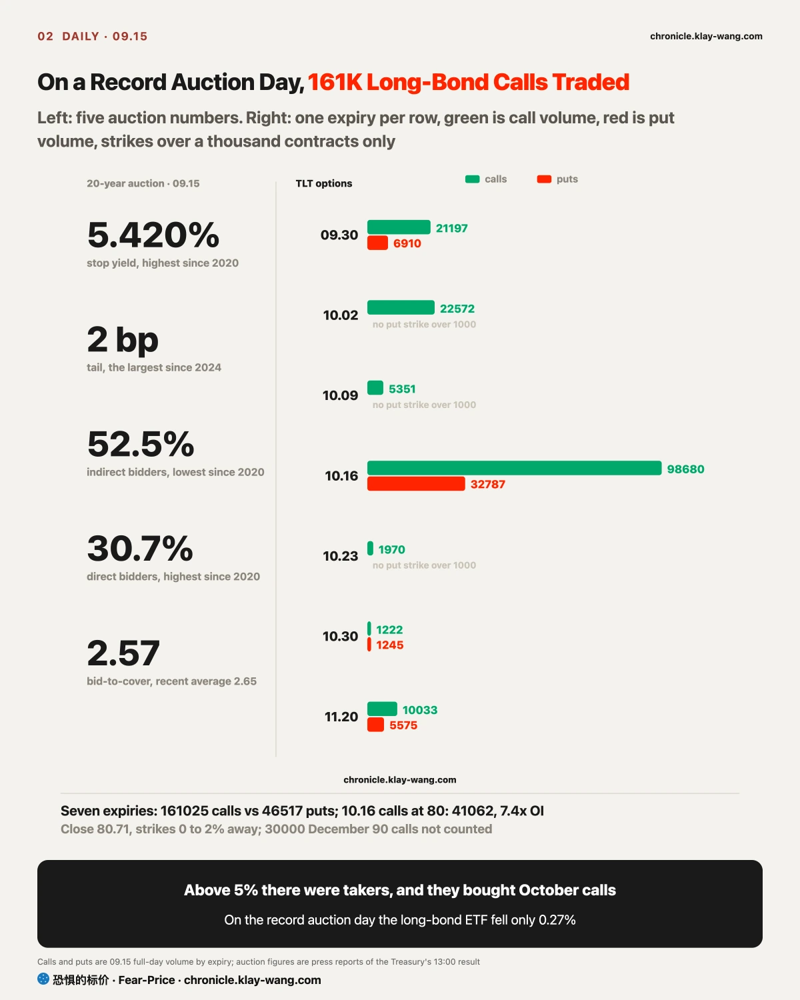
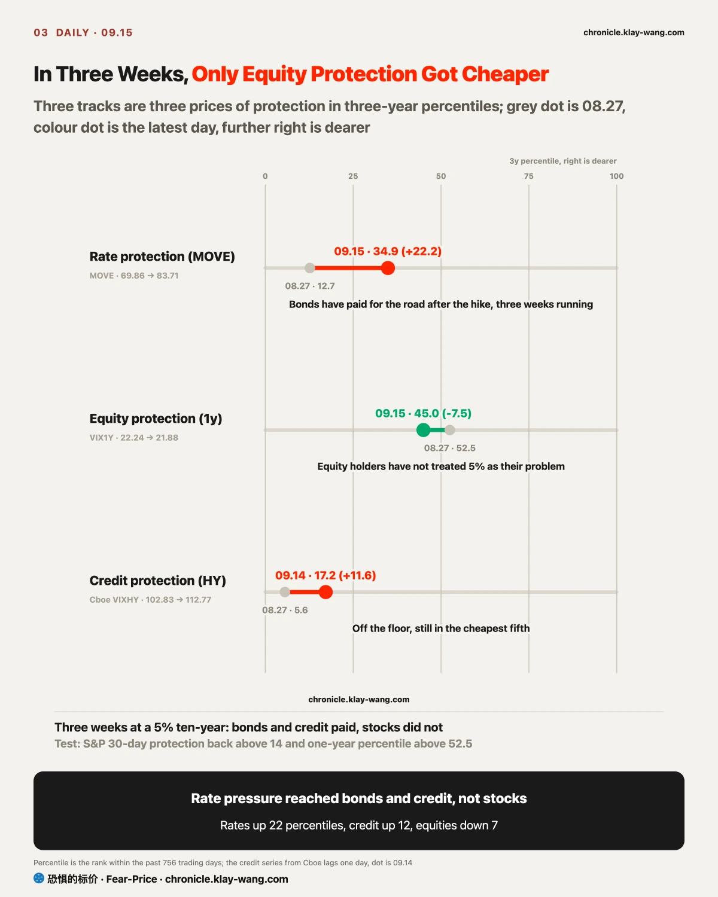
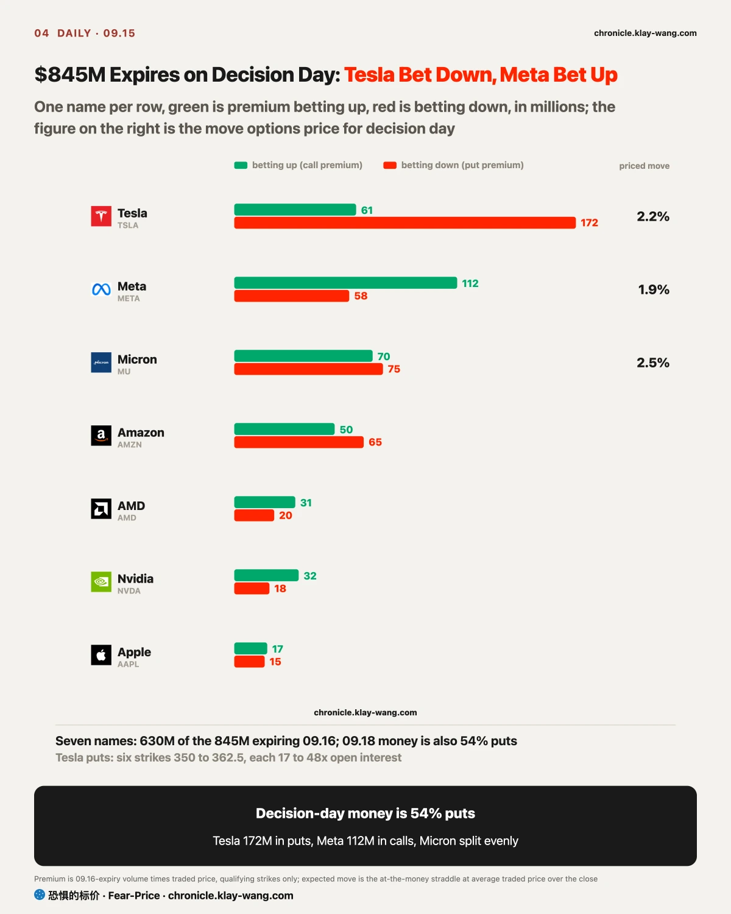
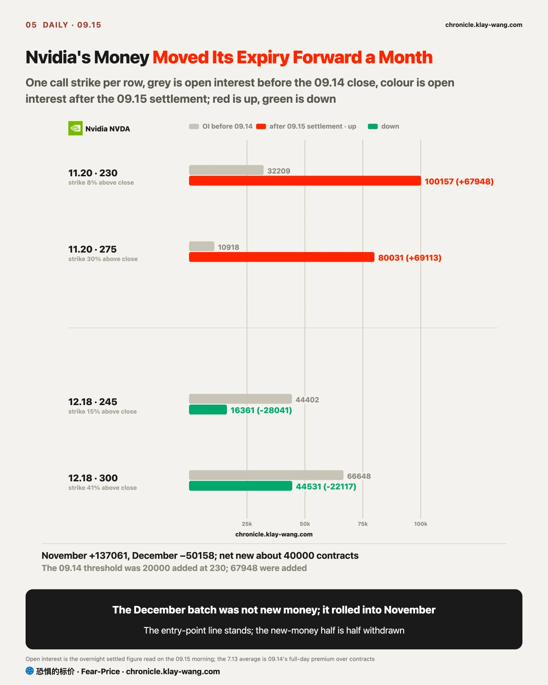

Fear-Price Index · Sep 15, 2026 · 45.0/100: one-year volatility VIX1Y at 21.88, in the 45.0th percentile of the past three years, where high means expensive. Daily ledger and definitions at chronicle.klay-wang.com · Please credit: Fear-Price Index
On the day before the decision the gauge did not move a notch. The reading went from 47.5 on 09.14 to 45.0, the one-year at 21.88 is 0.09 below 09.14; of the five tenors only the nine-day rose, by 0.30 to 17.21, and the other four barely moved.
The price of the decision day itself was paid during the week of 09.11, and nobody topped it up on 09.15.
Put the tables side by side and they say one thing: the sentiment gauges are afraid, and option prices have not risen. CNN Fear and Greed is 28.7, the 19th percentile since 2011, which is fear; equity protection is not dear, with the VIX at 17.2 and one-year protection in the 45th percentile of three years; the K index, the ratio of the two, is 1.67, meaning sentiment is more afraid than the premium.
K has to fall below 1 before fear turns into money. On 09.15's numbers that takes a VIX above 28.7 or Fear and Greed below 17, and both are far away.
Only one kind of protection is getting dearer. Protection against an extreme fall is at 152.09, the 97.3rd percentile of its full history, fifty percentiles dearer than one-year protection: the market is insuring against one large fall, and what it fears is a large fall after the decision, not the decision itself. Rate protection (MOVE) is 83.71, the 34.9th percentile of three years, 0.19 below 09.14 and the first day since 09.08 it did not rise; the bond side has mostly paid its bill.
These readings update daily on two pages: chronicle.klay-wang.com/kindex plots what followed each of the 39 times K broke 1 since 2011, a median gain of 3% over three months with 64% of cases higher; chronicle.klay-wang.com/fear-price carries the five tenors and the three percentile windows. Whether K breaks 1 on decision day will be on those two pages after the 09.16 close.

The worse the auction and the less the price fell, the more the day's real information sits in that gap: above 5% there were takers. The 20-year traded at 5.400% before issue and stopped at 5.420%, 2 basis points above expectations, the largest tail since 2024; indirect bidders, the accounts that bid through primary dealers, where most foreign central banks and institutions sit and which the press uses as the proxy for foreign demand, took 52.5% against 62.9% last month and a recent average of 68%, the lowest since the tenor's 2020 reintroduction; direct bidders took 30.7%, the highest since then and dealers were left with 16.9%. Foreign buyers stepped back, domestic funds stepped in, and the price of stepping in was 5.42%.
After the result the long end did not break. The long-bond ETF gapped down 0.37%, recovered 0.10% in the session, closed down 0.27% on the same volume as 09.14, in the upper 60% of its daily range; the ten-year touched 5.045% intraday and closed back under 5%. Thirty-day protection on the long-bond ETF rose 0.62 to 12.87, the 14th largest rise among 42 names, hardly a rush.
In options someone was buying its upside, paying real option premium. October calls traded 161000 contracts against 47000 puts; the 10.16 calls at 80 traded 41062, 7.4 times open interest; the 10.02 calls at 81 and 82 traded 5987 and 10264, about 4 times open interest each. Those strikes sit 0 to 2% from the 80.71 close, a bet that long yields come down after the decision, with the payoff window two weeks to a month.
Whether those calls stay after the 09.16 settlement is the first evidence of whether this money is betting on the decision. My reading of 09.15: the day of the record auction did not knock long bonds down because yields above 5% brought new buyers in, and that is exactly what the options crowd is betting on. In the past 20 years, across the 17 hikes with the ten-year above 4%, the long-bond ETF's median return three months later was +2.1%; after the June 2006 hike, with the ten-year at 5.20%, it rose 8.7% in three months. If the long-bond ETF closes below 80 within two days of the decision and open interest in the 10.16 calls settles under twenty thousand on 09.17, this section is withdrawn.

The sector order on the day before the decision says money is making way for oil and rates, not for a recession. The energy ETF gained 2.16% and the oil ETF 3.31%, the only rise of any size; utilities fell 1.19% and consumer staples 0.81%, two defensive sectors losing more than the S&P's 0.46% the day before a hike.
The bitcoin ETF fell 3.64% and Coinbase 10.10% after the Senate blocked the crypto market-structure bill's procedural vote with 41 nays. The software ETF fell 1.02%, giving back a fifth of 09.14's 5.04% gain.

In the three weeks the ten-year has been touching 5%, buyers of rate protection and buyers of credit protection both paid up, and buyers of equity protection stepped back.
The price of rate protection rose from 69.86 on 08.27 to 83.71, from the 12.7th percentile of three years to the 34.9th, 22 percentiles. The price of high-yield credit protection (Cboe VIXHY) printed 112.77 on 09.14 against 102.83 on 08.27, from the 5.6th percentile to the 17.2nd, 12 percentiles, off the floor.
One-year equity protection over the same stretch fell from 22.24 to 21.88, from the 52.5th percentile to the 45.0th, the only one of the three getting cheaper. A Wall Street analysis relayed by Zhitong Finance on 09.15 wrote the order as bond volatility first, then equities, then credit spreads, with the threshold at a 5.25% ten-year, beyond which the stock-bond correlation turns positive and bonds stop hedging stocks. The 09.15 numbers change the order: credit moved before equities. I see two reasons: single-stock correlation is near record lows, so names rise and fall on their own news and index-level volatility nets out; and the S&P is only 2.8% below its 08.13 high, so equity holders have not yet treated 5% as their problem.
One comparison shows the two sides still paying their own bills. On 09.14, when the semiconductor ETF fell 4.75%, the long-bond ETF closed flat and rate protection rose 1.69; on 09.15, the day of the record auction, the semiconductor ETF closed flat and equity protection rose only 0.70. Each side paid its own bill on its own day, which is what a correlation that has not yet turned positive looks like; once it turns, both fall on the same day.
The end of bonds hedging stocks matters most to equity holders: for three years, on down days bonds rose while stocks fell and the two sides of a portfolio offset each other; past a 5.25% ten-year both fall together and nothing offsets, and that is when the price of equity protection catches up, paying for three weeks of arrears.
What an equity holder should watch: bonds and credit have already paid up for 5%, and only the premium on equities has not risen. When does it count as rising? No need to wait for Wall Street's 5.25%; two numbers are enough: S&P thirty-day protection back above 14 (13.91 on 09.15), and one-year protection back above the 52.5th percentile of three weeks ago (45.0 on 09.15). If both arrive after the decision, the premium on equities has started rising too, and the claim in this section that transmission skipped equities is one I will take back.

The money expiring on decision day is defensive, and so is the money expiring two days later. Options expiring 09.16 traded 845 million dollars of option premium, 54% puts; of the 2.56 billion expiring 09.18, TSMC's 1.17 billion of deep in-the-money calls and SpaceX's 370 million of deep in-the-money puts are structural positions traded at intrinsic value, not directional bets, and with those removed the remaining 1.02 billion is also 54% puts.
Tesla alone is 233 million, 172 million of it puts, 74%, concentrated in six strikes from 350 to 362.5 around the money, each trading 17 to 48 times open interest. Meta's 170 million is 66% calls; Meta rose 1.66% in the session to close +0.70%, the largest session gain among the seven megacaps. Micron's 144 million is split evenly between calls and puts, with over ten thousand contracts on each side of the 930 strike: a bet on movement, not direction.
Converted into an expected move for decision day, these prices are the one number a holder should look at. At average traded prices, Tesla's 357.5 straddle cost 8.01 dollars, or 2.2%; Micron's 930 straddle about 23 dollars, 2.5%; Meta's 670 straddle 12.6 dollars, 1.9%; the S&P ETF's expected move to 09.18 is ±8.83 points, 1.16%. A 09.16 close inside those ranges pays the protection sellers; outside them, the buyers.

Nvidia's bet on a November rise was still there, and the December batch was rolled: both were settled by the 09.15 morning open interest.
The near end first. The 09.16 calls at 212.5 traded 86146 contracts for only 12.7 million dollars, a one-day bet four times smaller than the 09.14 November batch. At the far end, settled open interest in the four strikes: the 11.20 calls at 230 went from 32209 to 100157, up 67948; the 11.20 calls at 275 from 10918 to 80031; the 12.18 calls at 245 fell from 44402 to 16361, and the 12.18 calls at 300 from 66648 to 44531.
The expiry moved from December to November, the strike came down from 245 to 230, and the count doubled from forty-four thousand to a hundred thousand. Of the 68 thousand added in November, about 28 thousand came over from December; net new money is about 40 thousand contracts, roughly 29 million dollars at the 09.14 average price of 7.13. The 09.14 kill condition was fewer than twenty thousand added at the 230 strike; 68 thousand were added, so the entry-point line stands. Open interest at 245 fell below twenty thousand, so the half-sentence about new money is half withdrawn.
My reading of the roll: whoever held Nvidia's December calls did not cut on 09.14, they moved the expiry a month earlier, to 11.20, which covers the third-quarter report week, moving the bet from year-end to earnings week. The 230 calls printed 7.56 on 09.15, 0.43 above the 09.14 average, no loss on day one. For anyone holding Nvidia: those hundred thousand contracts are in your boat below 230, and above 275 they are capped while you are not. If the stock closes under 200 before 11.20 and open interest at 230 halves before 09.22, this section is void.
The three calls from 09.14 and two left from last week, checked one by one on 09.15:
No trading advice; only 09.15's prices converted into things you can judge for yourself.
If you hold long bonds: on the day of the record auction the long-bond ETF fell only 0.27%, and October calls traded more than three times the puts. Across the 17 hikes of the past 20 years with the ten-year above 4%, the long-bond ETF's median three-month return was +2.1%. Most of your bill was paid by 09.15; after the decision the level to watch is whether 80 holds.
If you hold semiconductors: what was bought back in the 09.14 session faded on shrinking volume on 09.15, with nobody chasing and nobody delivering; one-year protection on Micron, SanDisk and Intel got cheaper two days running. In the past 20 years, three months after the first hike of a cycle the Philadelphia semiconductor index fell a median 18%; a year after the last hike it rose 35%. Which hike 09.16 is matters far more than whether they hike.
If you hold Tesla: the market has priced decision day at 2.2%, and the six put strikes behind the 172 million break even between 348 and 354. A 09.16 close above 354 leaves all six losing; above 362.5 they all expire worthless, and nothing happens to your shares.
If you hold crypto names: Coinbase fell 10.10% and MicroStrategy 5.36% after the bill failed with 41 nays, and thirty-day protection on Coinbase got 1.82 cheaper. The vote is over; the price fell and fear did not rise with it, which usually reads as positions clearing out, not new fear.
If you hold stocks and did nothing: of the three stations only equity protection is getting cheaper, and you are the only one who has not paid. After the decision, S&P thirty-day protection back above 14 is the first number to watch, and the one-year percentile back above 52.5 the second.
If you hold nothing and are waiting for an entry: across 37 hikes in the past 20 years the S&P's median move on decision day was down, six in ten were higher three months later and nine in ten a year later. In the seven hikes that came with the K index in fear, seven in ten were higher three months later. Historically, what the waiters got was the decision-day dip.
20 年期国债拍卖得标 5.42%，是这个期限 2020 年以来最高，海外为主的间接投标 52.5% 史上最低。长债 ETF 只跌 0.27%。期权里有人在买它的上涨：十月到期的看涨成交 16.1 万张，看跌 4.7 万张，10.16 到期行权价 80 的看涨成交 41062 张，是持仓的 7.4 倍。5% 以上有人接，接的人赌决议之后利率回落。
三条保护价钱三周走成两头。为利率买保护从近三年第 12.7 分位涨到 34.9，为高收益信用买保护从 5.6 涨到 17.2，为股票买一年保护从 52.5 降到 45.0。利率的压力先到了债市和信用市场，拿股票的人还没为它买过保险。决议后要看的两个数：标普三十天保护回到 14 以上（09.15 是 13.91），一年期保护分位回到 52.5 以上。
押 09.16 决议日到期的期权权利金 8.45 亿，看跌占 54%。特斯拉一家 2.33 亿，看跌占 74%，市场给它决议日定的价是 2.2%；Meta 看涨占 66%；美光看涨看跌各半，买的是动不是方向。英伟达 09.14 押十一月的十万张看涨结算后住下了，十二月那批换仓到十一月，赌注从年底提前到财报周。
恐惧的标价 45.0，09.14 是 47.5。五档期限一格没动，决议那一天的价 09.11 那周就付完了。为极端下跌买保护还在全史第 97.3 分位。
近 20 年 37 次加息：决议当天标普中位是跌的，三个月后六成上涨，一年后九成上涨。首次加息后三个月半导体中位跌 18%，末次加息后一年涨 35%，09.16 是第几次加息比加不加重要得多。
今天值得带走的三句话：拍卖最差的一天长债没跌，有人买十月的看涨；三周里付钱的是债和信用，股票一分没付；押决议日的钱五成四是看跌，英伟达把十二月的赌注挪到了十一月。